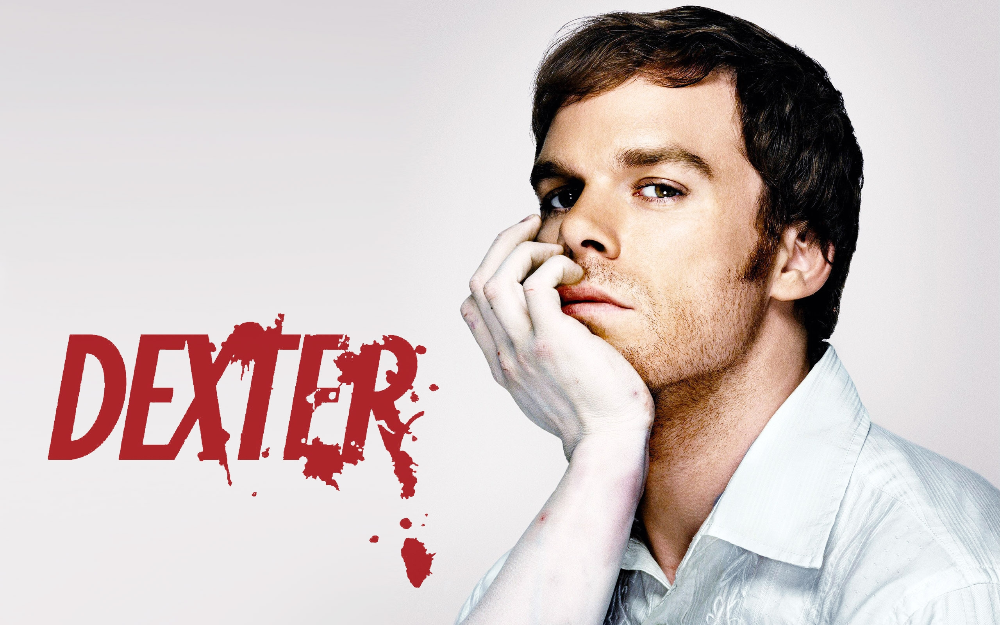
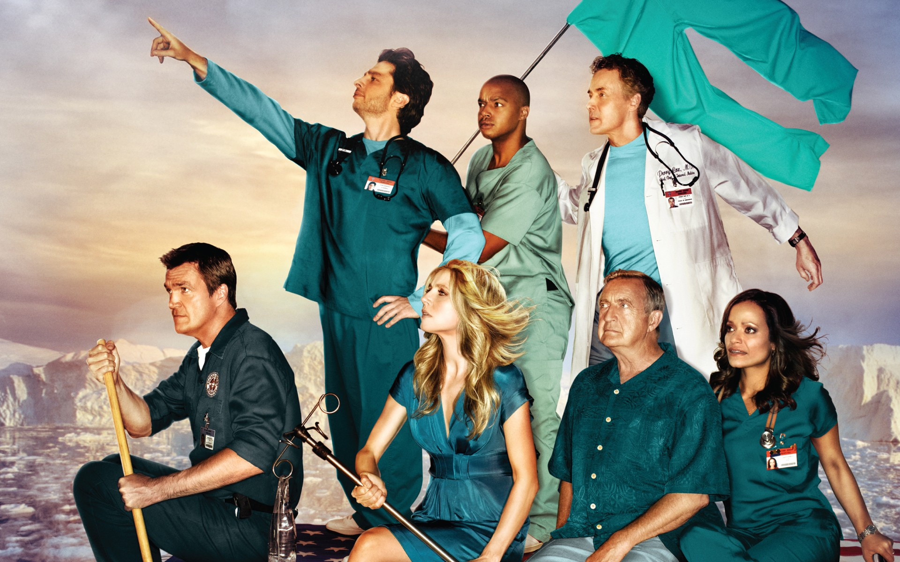

Used to manage ecommerce operations @Sarenza & @Sézane.
Onboarded at Le Wagon to learn how to create great products and to be able to create my startup in education / personal development !
|  | DexterVictime d'un traumatisme dans son enfance, Dexter Morgan est adopté par un officier de la police de Miami, Harry Morgan. Devenu adulte, Dexter est présenté comme un tueur en série. Pour masquer cette activité de tueur, Dexter travaille pour la police de Miami, au département de la Criminelle : il y est expert en médecine légale spécialisé dans l'analyse de traces de sang. Bien que sa soif de tuer lui pèse, Dexter parvient à mener une existence relativement normale et à sauver les apparences auprès de sa sœur Debra Morgan, ses collègues, ses amis et sa petite amie Rita Bennett. |
NarcosÀ la fin des années 1970, les États-Unis et la Colombie se lancent dans une lutte acharnée contre le cartel de drogue de Medellín. Steve Murphy, jeune agent de la DEA fait son possible pour faire tomber Pablo Escobar et ses hommes, malgré l'importante corruption policière qui gangrène la Colombie. Cette lutte se mêle à celle des États-Unis contre le communisme et à de nombreux autres intérêts politiques. |
|
|  |
ScrubsScrubs est une série centrée sur la vie du personnel de l'hôpital du Sacré-Cœur (Sacred Heart) et particulièrement sur celle de John Dorian, alias « J.D. ». Au début de la série, J.D. est un jeune interne qui entre à l'hôpital du Sacré-Cœur, tout comme son meilleur ami et colocataire, l'apprenti-chirurgien Christopher Turk. Ils sont accompagnés dans leurs premiers pas par leur camarade Elliot Reid, jeune femme brillante mais névrosée au charme de laquelle J.D. succombe immédiatement, et par Carla Espinosa, infirmière au caractère bien trempé qui ne laisse pas Turk indifférent. |